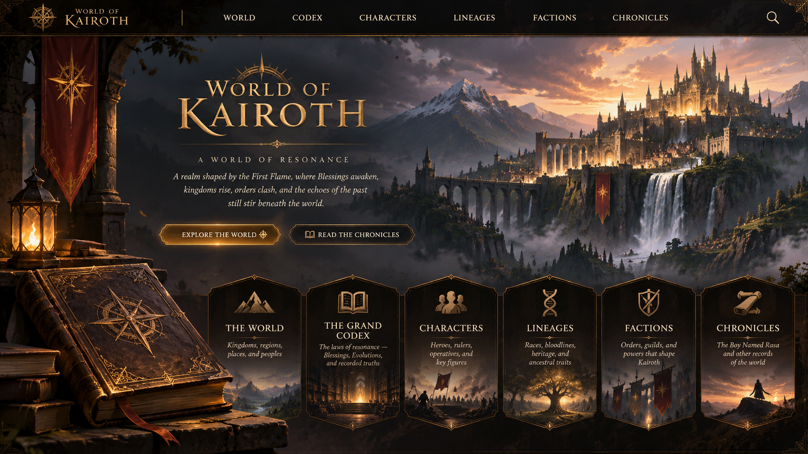

KAIROTH
A WORLD OF RESONANCE
A realm shaped by the First Flame, where Blessings awaken, kingdoms rise, orders clash, and the echoes of the past still stir beneath the world.

A realm shaped by the First Flame, where Blessings awaken, kingdoms rise, orders clash, and the echoes of the past still stir beneath the world.